전자캐드기능사 (2011-04-17 기출문제)
1과목: 전기전자공학(대략구분)
1. 전지 1개의 내부저항 R를 n개 직렬로 접속하여 최대 전력을 부하에 전달하여고 하면 부하저항은?
- R
- nR
- 1/R
- R/n
(정답률: 71%)

2. 부궤환 회로의 특징에 대한 설명으로 적합하지 않은 것은?
- 이득이 감소한다.
- 안정도가 개선된다.
- 왜율이 감소한다.
- 주파수 대역폭이 감소한다.
(정답률: 57%)
3. 이상적인 연산증폭가에서 동상신호제거비(CMRR)는?
- 0
- 1
- 100
- 무한대
(정답률: 64%)
4. 기전력이 180[V], 내부저항이 20[Ω]인 전원에 70[Ω]의 부하저항을 접속할 때 부하저항 양단의 전압[V]은?
- 30
- 80
- 140
- 160
(정답률: 60%)
5. 원형 코일의 감은 횟수 N회, 코일의 반지름 r[m],코일에 흐르는 전류가 I[A]라면 코일 중심의 자장의 세기[AT/m]는?
- r에 비례한다
- r에 반비례한다.
- I에 반비례한다.
- r2에 반비례한다.
(정답률: 61%)
6. 수정발진기는 수정진동자의 어떤 전기적인 특성을 이용 하는가?
- 지벡효과
- 압전기현상
- 펠티에효과
- 전자유도현상
(정답률: 52%)
7. 평판 콘덴서에 2[C]의 전기량을 공급할 때, 콘덴서의 전위가 10[V]이면 정전용량[F]은?
- 0.1
- 0.2
- 0.5
- 1.5
(정답률: 50%)
8. 증폭기의 전압증폭도가 100이고, 전류증폭도가 10일 때, 이 증폭기의 전력이득[dB]은?
- 10[dB]
- 20[dB]
- 30[dB]
- 60[dB]
(정답률: 36%)
9. 다음 중 비정현파 발진기 속하는 것은?
- 하틀리 발진기
- 블로킹 발진기
- 이상형 RC발진기
- 콜피츠 발진기
(정답률: 56%)
10. 다음 중 수정진동자의 설명으로 거리가 먼 것은?
- 주파수 안정도가 양호하다.
- 수정편의 Q가 높다.
- 출력이 매우 크다.
- 고주파 발진에 적합하다.
(정답률: 49%)
11. 동일한 정현파의 반주기 동안 평균치/실효치는 약 얼마인가?
- 0.9
- 1.41
- 2.11
- 3.14
(정답률: 34%)
12. 다음 트랜지스터 회로는 어떤 바이어스 회로인가?
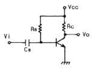
- 고정 바이어스회로
- 전압분배 바이어스회로
- 전류분배 바이어스회로
- 혼합 바이어스회로
(정답률: 46%)
13. 주파수를 2배로 한 경우 전류의 크기가 반으로 감소되는회로의 소자는?
- 저항
- 인덕터
- 콘덴서
- 다이오드
(정답률: 51%)
14. 다음 회로에서 전원전압이 1[V]일 때, R1에 흐르는 전류 I1[A]은?
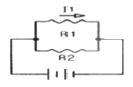
- 0.2
- 0.3
- 0.4
- 0.5
(정답률: 62%)
15. 다음 ( )안에 들어갈 내용으로 알맞은 것은?
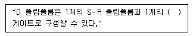
- AND
- OR
- NOT
- NAND
(정답률: 64%)
2과목: 전자계산기일반(대략구분)
16. 명령부의 오퍼랜드(Operand) 자체가 실제 그 데이터인 번지지정 방식은?
- direct address
- immediate address
- indirect adderss
- relative address
(정답률: 48%)
17. 기억된 정보를 읽기는 자유롭지만 내용을 바꾸어 넣을수 없는 기억소자는?
- ROM
- RAM
- SRAM
- DRAM
(정답률: 66%)
18. 다음 중 순서 논리 회로에 해당되는 것은?
- 반가산기(half adder)
- 보호기(encoder)
- 플립플롭(flip-flop)
- 멀티플렉서(multiplexer)
(정답률: 63%)
19. 자기 디스크의 설명으로 옳은 것은?
- sequential access만 가능하다.
- random access만 가능하다.
- 주로 sequential access를 많이 한다.
- 주로 random access를 많이 한다.
(정답률: 40%)
20. 컴퓨터를 구성하는 요소를 크게 2부분으로 분류하면?
- 중앙처리장치와 입출력장치
- 연산장치와 제어장치
- 중앙처리장치와 보조기억장치
- 주기억장치와 보조기억장치
(정답률: 42%)
21. 다음 중 객체지향언어에 해당하지 않은 것은?
- 기계어
- 비주얼 C++
- 델파이(Delphi)
- 자바(JAVA)
(정답률: 57%)
22. 8진수 37.54를 16진수로 변환하면?
- 1F.A
- 1F.A4
- 1F.BA
- 1F.B
(정답률: 38%)
23. 다음 중에서 일반적으로 가장 적은 Bit로 표현 가능한 테이터는?
- 영상 데이터
- 문자 데이터
- 숫자 데이터
- 논리 데이터
(정답률: 71%)
24. 다음 중 C 언어 프로그램 형식과 관계가 없는 것은?
- 인터프리터 방식을 사용한다.
- “/*”와“*/”를 이용하여 주석을 나타낸다.
- 프로그램내의 명령은 ;(세미콜론)으로 구분된다.
- 모든 프로그램은 main 함수로부터 실행이 시작된다,
(정답률: 60%)
25. 컴퓨터 회로에서 bus line을 사용하는 가장 큰 목적은?
- 정확한 전송
- 속도 향상
- 레지스터 수의 축소
- 결합선 수의 축소
(정답률: 55%)
26. 레지스터와 유사하게 종작하는 임시 저장장소로써 유사한 가능을 하며 다음 실행한 명령어의 주소를 기억하는 기능을 하는 것은?
- 레지스터
- 프로그램 카운터
- 기억장치
- 플립플롭
(정답률: 68%)
27. 다음 회로는 직렬가산기이다. 입력 A=10, B=11을 입력할 때 합 S의 값은?
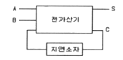
- 100
- 101
- 110
- 111
(정답률: 57%)
28. 전자회로 부품 중 능동 부품이 아닌 것은?
- 다이오드
- 트랜지스터
- 집적회로
- 저항
(정답률: 72%)
29. 다음 중 각 나라의 표준규격 기호를 짝지어 놓은 것 중 옳지 않은 것은?
- KS - 한국산업표준
- ANSI - 미국표준규격
- IOS - 스위스공업규격
- JIS - 일본공업규격
(정답률: 82%)
30. 다음 회로의 명칭은?
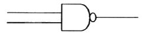
- OR GATE
- AND GATE
- NAND GATE
- EX-OR GATE
(정답률: 86%)
3과목: 전자제도(CAD) 이론(대략구분)
31. 회로도의 작성법 설명으로 옳지 않은 것은?
- 정해진 도 기호를 명확하면서도 간결하게 그려야 한다.
- 신호의 흐름은 도면의 왼쪽에서 오른쪽으로 한다.
- 전체적인 배치와 균형이 유지 되게 그려야 한다.
- 신호의 흐름은 아래에서 위로 흐르게 한다.
(정답률: 82%)
32. 전자기기에 패널을 설계할 때 유의하여야 할 사항으로 적합하지 않은 것은?
- 전원 코드는 배면에 배치한다.
- 패널 부품은 크기를 고려하여 균형 있게 배치한다.
- 조작상 서로 연관이 있는 요소끼리 근접 배치한다.
- 장치에 외부와 연결되는 접속기가 있을 경우에는 될 수 있는 대로 패널의 배면에 배치한다.
(정답률: 65%)
33. 전자CAD 시스템을 이용하여 PCB 설계 (art-work)를 완료한 후 기판 제작 공정에 사용하기 위한 파일로 출력하여야 한다. 그종류가 아닌 것은?
- schmatic 파일
- gerber 파일
- HPGL 파일
- DXF 파일
(정답률: 47%)
34. 도면으로부터 위치 좌표를 읽어 들이는데 사용하는 CAD 시스템의 입력 장치는?
- 마우스(mouse)
- 트랙볼(trackball)
- 디지타이저(digitzer)
- 이미지스캐너(image scanner)
(정답률: 71%)
35. 다음 전자부품 기호 중 발광 다이오드 기호로 옳은 것은?
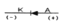
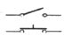
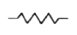
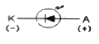
(정답률: 80%)
36. 부품을 배치 할 때 고려해야 할 사항으로 옳지 않은 것은?
- 잡음이 발생하는 부품은 이격시킨다.
- 아날로그 및 디지털 회로가 혼용된 회로라도 단일 접지를 사용한다.
- 전원용 라인 필터는 커넥션 가까이 배치한다.
- 발열하는 부품에 대해서는 방열 설계를 한다.
(정답률: 69%)
37. PCB 패턴 설계 때 유의사항을 설명한 것 중 옳지 않은 것은?
- 패턴을 미관을 고려하여 가능한 가늘고 짧게 하여야 한다.
- 팬턴 사이의 간격을 떼어 놓거나 차폐를 헹한다.
- 취급하는 전력용량, 주파수 대역 및 신호 형태별로 기판을 나누거나 커넥터를 분리하여 설계한다.
- 배선은 가급적 짧게 하는 것이 다른 배선이나 부품의 영향을 적게 받는다.
(정답률: 67%)
38. PCB의 종류 중 필름에 동박을 접착 및 절곡하여 휘어지는 부분에 사용하는 카세트, 카메라, 핸드폰 등에 사용하는 것은?
- 페놀 기판
- 에폭시 기판
- 콤포지트 기판
- 플렉시블 기판
(정답률: 75%)
39. 다음 중 제도 용지의 크기가 가장 큰 용지는?
- AO
- A1
- A4
- A5
(정답률: 83%)
40. 등사 원리를 이용하여 내산성 레지스터를 기판에 직접 인쇄하는 방식은?
- 사진 부식법
- 실크 스크린법
- 오프셋 인쇄법
- 자동화 인쇄법
(정답률: 50%)
41. 다음 중 설계 규칙을 검사하는 것은?
- Annotate
- DRC
- Netlist
- Export
(정답률: 73%)
42. PCB를 사용하여 전자기기를 제조하였을 때 얻을 수 있는 장점이 아닌 것은?
- 대량 생산의 효과가 높다.
- 제품의 균일성과 신뢰성이 높다.
- 잡음, 온도 등 안정 상태를 유지한다.
- 소량 다품종 생산에 적합하고, 비용이 저렴하다.
(정답률: 74%)
43. 그림과 같은 전자 부품 기호의 명칭은?
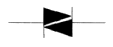
- 트랜지스터(TR)
- 전기장 효과 트랜지스터(FET)
- 다이오드(Diode)
- 다이액(DIAC)
(정답률: 80%)
44. 세라믹 콘덴서의 외부에 104라는 숫자가 적혀있다. 이 콘덴서의 용량은?
- 1[㎌]
- 0.1[㎌]
- 0.01[㎌]
- 0.001[㎌]
(정답률: 63%)
45. 다음 중 CAD 시스템의 입력 장치가 아닌 것은?
- 키보드(Keyboard)
- 프린터(Printer)
- 마우스(Mouse_
- 디지타이저(Digitzer)
(정답률: 79%)
46. 전자 제도의 PCB설계에 적당하지 않은 CAD 소프트웨어는?
- Or-CAD
- Auto-CAD
- P-CAD
- CADSTAR
(정답률: 69%)
47. 일반적인 도면의 표제란에는 척도를 기입하는 난이 있다. 그러나 전자회로도나 블록도(Block diagram)와 같이 기호(Symbol)와 글자로만 도면이 이루어질 경우, 치수의 의미가 없거나 도면과 실물의 치수가 비례하지 않을 때 척도 난의 표기로 옳은 것은?
- NO
- NC
- NS
- NX
(정답률: 77%)
48. 다음 중 기판 종류에 맞지 않는 것은?
- 단면 기판
- 양면 기판
- 3층 기판
- 4층 기판
(정답률: 48%)
49. 유연성 인쇄회로기판으로 불리며, 카메라 등의 굴곡진 부분에 많이 사용되는 기판은?
- 에폭시 기판
- 페놀 기판
- 메탈 기판
- 플렉시블 기판
(정답률: 77%)
50. 인쇄회로기판 가공에 사용되는 용어 중 부품의 단자 또는 도체 상호간을 접속하기 위하여 구멍 주위에 만든 특정한 도체 부분을 무엇이라 하는가?
- 랜드(Land)
- 마운트(Mount)
- 패턴(Pattern)
- 홀(Hole)
(정답률: 66%)
51. 전자 CAD 프로그램에서 하나의 부품 기호를 불러왔을 때 표시되는 것이 아닌 것은?
- 부품의 심벌
- 부품의 참조
- 부품의 값
- 부품의 크기
(정답률: 53%)
52. 세븐 세그먼트(FND)가 동작할 때 빛을 내는 것은?
- 발광 다이오드
- 부저
- 릴레이
- 저항
(정답률: 86%)
53. 다음 중 검출용 기구가 아닌 것은?
- 근접 스위치
- 실렉트 스위치
- 광전 스위치
- 압력 스위치
(정답률: 53%)
54. 트랜지스터 형식 명칭에 대한 설명으로 옳지 않은 것은?
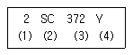
- (1)은 소자의 종류를 의미한다.
- (2)는 반도체 소자로서 PNP형 저주파를 의미한다.
- (3)은 등록번호이며, 11부터 시작한다.
- (4)는개량표시를 의미한다.
(정답률: 63%)
55. 능동 부품(active component)의 능동적 기능이라고 볼 수 없는 것은?
- 신호의 증폭
- 신호의 발진
- 신호의 변환
- 신호의 중계
(정답률: 72%)
56. 다음 중 저항값이 낮은 저항기로, 대전력용으로도 사용되며 표준저항기 등의 고정밀 저항기로도 사용되는 저항기는?
- 모듈 저항기
- 권선 저항기
- 탄소 피막 저항기
- 솔리드 저항기
(정답률: 69%)
57. 다음 중 작업 진행 과정을 눈으로 바로 확인 가능한 장치는?
- 메모리
- 하드 디스크
- CPU
- 모니터
(정답률: 85%)
58. 다음 프린터 종류 중 비 충격(non-impact) 프린터는?
- 활자 프린터
- 도트 프린터
- 펜 스트로크 프린터
- 레이저 빔 프린터
(정답률: 78%)
59. 인쇄회로기판의 임피던스에 영향을 주는 물리적 요소에 대한 설명으로 옳지 않은 것은?
- 패턴의 폭을 줄이면 임피던스는 증가 하고, 폭은 넓히면 감소한다.
- 패턴의 두께가 얇아지면 임피던스는 증가하고, 두께가 두꺼워지면 감소한다.
- 팬턴 간의 간격이 넓어지면 임피던스는 커지고, 간격이 좁아지면 임피던스는 작아진다.
- 전체 제품의 두께가 얇아지면 임피던스는 높아지고, 두꺼워지면 작아진다.
(정답률: 37%)
60. 다음 중 전원회로도 제도에 관한 설명으로 옳지 않은 것은?
- 전원 트랜스는 1차 및 2차의 전압의 전류를 표시해 주어야 한다.
- 평활 콘덴서가 전해 콘덴서의 경우 도면에 반드시 극성을 표시해야 한다.
- 다이오드는 대부분 용량 대신에 현 명칭을 사용한다.
- 전원 트랜스는 “+”표시로 동위상을 나타내기도 한다.
(정답률: 38%)